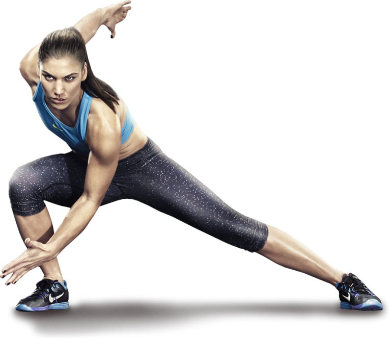

hello! My name is Arpita
and I am a

work experience

Entreprenuer
I'm a budding entrepreneur with strong leadership and marketing skills, continuously generating and implementing innovative ideas. My goal is to become a highly successful entrepreneur, delivering the best possible outcomes to society.

Writing
I'm a budding entrepreneur with a focus on strong leadership, marketing prowess, and a penchant for innovation. My ultimate goal is to achieve remarkable success in my entrepreneurial endeavors while making a positive impact on society.
Poetry
As a person with poetic vibes, I use poems as a means to express situations and showcase my thoughts to the world. Through poetry, I find the space to explore my creativity and hone my writing skills. It allows me to communicate in a unique and powerful way.

Athletics (since 8 year)
For over 8 years, I have been a national level badminton player, and I have also represented my State in kabaddi at the national level. Sports have not only made me healthier but have also opened up numerous opportunities in my life.